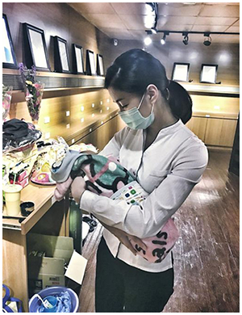
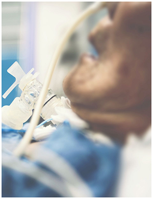

死亡與太陽一樣我們沒有辦法直視它，卻一直存在我們四周，它總是伴隨著遺憾，我們無法阻止，只能學著跟它相處，同時死亡也是老天給我們人很大的禮物，有多少人遇到這樣的狀況，面對到當下的人他除了哭，什麼機會也沒了，或許可以學習到接下來對於其他親朋好友可以多珍惜一點，更用心的對待他們，但對於他眼前的人只剩下三個字「來不及」。
單程行旅透過以下案例與您分享，希望大家都能遠離遺憾的可能
-

「媽媽用她ㄧ條命，換了個女兒給我。」亡者丈夫說到...
點擊閱讀完整文章...點擊圖片閱讀完整文章
「這應該是我遇到最小的家屬了，出生第十天。」禮儀師許伊妃在臉書寫下了這段故事，感動了不少網友，也讓許多人相當不捨。
由於小朋友的家裡沒有其他人可以幫忙照顧了，孩子一出生只能馬上開始喝配方奶，因為爸爸ㄧ個人要料理所有的事物，還沒滿月的嬰兒也只能帶來殯儀館。
亡者的丈夫強忍悲痛的說到：「媽媽用她ㄧ條命，換了女兒給我。」俗話說「生的過麻油香，生不過四塊板」，成功生產的家裡充滿了麻油雞、油飯的香味，而難產的，只剩下四塊板的棺材。或許就是這個意思吧，活生生的在我眼前。
孩子跟媽媽相處只有短短四個小時，媽媽連抱都沒有抱到就離世了…爸爸說，孩子在家不停的哭鬧，但是車子ㄧ開到會館門口，哭聲就停了！在媽媽靈前才睡的安穩…冥冥之中就好像媽媽正在哄著孩子睡的樣子，你信嗎？嗯我相信！！！
我常說，我總能在終點發現起點，這兩個新生兒卻在她們呱呱墜地的同時，翻越了生離。媽媽真的很辛苦，生命真的很脆弱；人生也是真的很無常。
我抱著孩子，在心裡告訴她：孩子，妳們的生命及髮膚何等珍貴偉大，願妳們平安健康，延續媽媽給你們無限的愛。
我想最難受的莫過於孩子的爸爸，與上輩子的情人再度重逢時，卻同時也失去了今生最愛的人，在孩子的生長過程中，他必須父代母職，拉拔孩子們長大。對於孩子們而言，相信他們懂事後，知道這一切的事，或許會感到愧疚，但也會將這股愧疚感轉化為力量，好好的過這一生，連媽媽的份一併精彩的活下去。
看到這裡，快跟你媽媽說聲辛苦了，男人更應該轉身抱抱你老婆並說聲您真偉大…若你身為婆婆，也更應該好好疼惜別人家的女兒…因為每個孩子，都是媽媽用性命去拼博來的。
close -

「醫生那時候建議拔管，但我實在做不到，實在做不到！
點擊閱讀完整文章...點擊圖片閱讀完整文章
三年半前，凱沁的母親因為半夜心悸、氣喘嚴重，緊急送往急診室。「到醫院時，我的心情實在很慌亂。我媽媽之前也曾到醫院急診......但從來沒有一次嚴重到急診醫師建議插管......」凱沁說，她當下完全失去思考能力，認為自己該相信醫師的建議。「醫師都已經建議插管，家屬能說什麼？我想我們就配合吧。只要她能出院就好了，我當下真是這麼想，以為媽媽之後還會出院，沒想到後來就沒辦法了。」凱沁口中說的沒辦法，指的是媽媽無法自主呼吸，只能以插管的方式延續生命。
「幾個月後，媽媽一直沒清醒。醫生那時候建議拔管，但我實在做不到，實在做不到！」父親早逝的凱沁與母親相互之間是對方的支柱。凱沁六歲時，曾有一次溺水昏迷被送到醫院，媽媽下跪哭求醫師一定把自己從鬼門關救回來，「那時我依稀聽到媽媽哭得好慘，媽媽只有我，如果同意拔管，我就太不孝了啊！」凱沁回憶，站在急診室要決定的那一刻，雖然只有短短的幾分鐘，她腦 中卻閃過好幾個念頭。
「媽媽因為過程太痛苦，會去推醫師、護理師的手，為了怕媽媽危險，還把媽媽的手腳綁住。」說到這裡凱沁已經哽咽的泣不成聲：「那時候我想…..媽媽你忍耐點，會好的！你還這麼年輕，可以的！」剛過70歲生日的母親，以現代醫學來看，的確還很年輕啊。只是，凱沁真沒想到，媽媽後來就沒醒過來了。
「上個月某天我到醫院去看媽媽，我看到她腳都變形了，我想著，以前媽媽最愛踩腳踏車載我......現在她躺在床上什麼都不能做，不能吃飯不能說話，這樣媽媽真的會喜歡嗎？還是只是我不願意放手？」拔管時，醫師要我在媽媽耳邊說：「媽媽你辛苦了，現在身體已經不需要管子了，放心走吧。」凱沁說，那一刻住院以來沒有睜開眼睛的母親，打開了雙眼安祥和藹地看著凱沁，又慢慢闔上。「我永遠無法忘記媽媽拔管那一刻，躺在病床上看我的眼神......好像她終於解脫了。」
「上個月某天我到醫院去看媽媽，我看到她腳都變形了，我想著，以前媽媽最愛踩腳踏車載我......現在她躺在床上什麼都不能做，不能吃飯不能說話，這樣媽媽真的會喜歡嗎？還是只是我不願意放手？」拔管時，醫師要我在媽媽耳邊說：「媽媽你辛苦了，現在身體已經不需要管子了，放心走吧。」凱沁說，那一刻住院以來沒有睜開眼睛的母親，打開了雙眼安祥和藹地看著凱沁，又慢慢 闔上。「我永遠無法忘記媽媽拔管那一刻，躺在病床上看我的眼神......好像她終於解脫了。」
這麼突然的被推到前線去面對家人的死亡，不是一件你曾經預想過的事。當下情況那麼混亂，你卻必須做出立即的反應與決定，急救與否、插管與否？你不是醫療人員，只能憑著僅有的訊息做出判斷，你同意讓家人插管治療，已經是你當下能做出的最好決定。如果你是帶著善意，決定讓家人插管治療。我相信，插管的家人，雖然無法出院，也一定能理解你當下如此選擇的原因。正因為你們的關係與其他人不同，你才會如此想挽回他的氣息，留住他在你身邊，不是嗎？親愛的，看見親人受苦，是世界上最難受的事，你當下做的決定沒有所謂對錯，你只是想舒緩他的痛苦罷了。你已經做了當下，能夠做的最好決定。而如果，你還願意為自己、為自己的孩子或親人多做一點，我鼓勵你，不要讓決定在現場才發生。你可以透過預立醫療照護諮商，為自己預立醫療決定。那麼，你的孩子、親人就能夠少經驗一些目前你承受的掙扎、悔恨與痛苦了。
close -
一位男人打電話來說到，「我殺了我兒子希望你們能來幫忙接體...」
點擊閱讀完整文章...點擊圖片閱讀完整文章
某天一名男人的來電，對方表示自己「殺了自己的兒子」，因此希望小冬瓜的禮儀公司能幫忙接體，「怎麼可以殺死自己的孩子，卻還如此冷靜地打電話過來」；小冬瓜滿懷疑問與憤怒前往現場，只見打電話的父親滿臉憔悴地蹲坐在牆邊，見到小冬瓜就立刻起身，哭著拜託希望小冬瓜能好好處理他兒子的後事，面對這個情況，小冬瓜當場愣住，完全無法理解到底是遇到了什麼樣的狀況。
後來才了解到這名老父親的兒子，從小生了重病、生活完全無法自理，老父親已經照顧兒子整整超過二十五年，相信有照顧過病人的人都可以體會，照顧患者本身就是一件非常非常不簡單的事情，幾年前小冬瓜光是照顧癌症的爸爸大約三個多禮拜，就覺得非常辛苦了，而能夠這樣細心照顧兒子二十五年，絕對是因為有滿滿的愛才可以撐這麼久，人家常說「久病床前無孝子」，當角色轉換後到這名老父親，他何嘗不感到疲累呢？只是這一次我想這個爸爸真的是累了，他只是想給自己還有兒子一個休息的機會。
知道事情真相後，小冬瓜感到非常愧疚並說到：「之前我不斷批評別人的不是，卻從來沒有好好試著去理解，那些發生在背後的事，好好的人其實是不會自殺的，背後一定有他們的苦衷，從此之後我學會了要懂得閉嘴。」其實社會上存在許多不被瞭解的痛苦，常常是因為事件發生了，才讓大家去關心，但是寶貴的生命已經不再了。
在台劇「誰是被害者」中有一句詞常被提到，那就是「理解」，我們無法理解他們為什麼要做這個決定，而他們無法理解活著為什麼如此的容易，我們唯一知道的事情，就是我們什麼都不知道。
以前有位學長認為小冬瓜在接體時總是想太多，學長認為對於這些自殺者我們反而要去學會尊重每一個生命的選擇，當下聽到這句話，都會認為這位學長很冷血，但經過這次事件後才理解到我們永遠無法知道，對方曾經遭遇過什麼事情，光從表面上評斷很容易，但是事實上又有幾個人能夠知道真相呢？爾後若是我們看到類似的新聞，是否會願意停下鍵盤前的手指頭，去試著理解對方呢？
close
「這應該是我遇到最小的家屬了，出生第十天。」禮儀師許伊妃在臉書寫下了這段故事…
「這應該是我遇到最小的家屬了，出生第十天。」禮儀師許伊妃在臉書寫下了這段故事，感動了不少網友，也讓許多人相當不捨。
由於小朋友的家裡沒有其他人可以幫忙照顧了，孩子一出生只能馬上開始喝配方奶，因為爸爸ㄧ個人要料理所有的事物，還沒滿月的嬰兒也只能帶來殯儀館。
亡者的丈夫強忍悲痛的說到：「媽媽用她ㄧ條命，換了女兒給我。」俗話說「生的過麻油香，生不過四塊板」，成功生產的家裡充滿了麻油雞、油飯的香味，而難產的，只剩下四塊板的棺材。或許就是這個意思吧，活生生的在我眼前。
孩子跟媽媽相處只有短短四個小時，媽媽連抱都沒有抱到就離世了…爸爸說，孩子在家不停的哭鬧，但是車子ㄧ開到會館門口，哭聲就停了！在媽媽靈前才睡的安穩…冥冥之中就好像媽媽正在哄著孩子睡的樣子，你信嗎？嗯我相信！！！
我常說，我總能在終點發現起點，這兩個新生兒卻在她們呱呱墜地的同時，翻越了生離。媽媽真的很辛苦，生命真的很脆弱；人生也是真的很無常。
我抱著孩子，在心裡告訴她：孩子，妳們的生命及髮膚何等珍貴偉大，願妳們平安健康，延續媽媽給你們無限的愛。
我想最難受的莫過於孩子的爸爸，與上輩子的情人再度重逢時，卻同時也失去了今生最愛的人，在孩子的生長過程中，他必須父代母職，拉拔孩子們長大。對於孩子們而言，相信他們懂事後，知道這一切的事，或許會感到愧疚，但也會將這股愧疚感轉化為力量，好好的過這一生，連媽媽的份一併精彩的活下去。
看到這裡，快跟你媽媽說聲辛苦了，男人更應該轉身抱抱你老婆並說聲您真偉大…若你身為婆婆，也更應該好好疼惜別人家的女兒…因為每個孩子，都是媽媽用性命去拼博來的。
非得讓父母插管留一口氣？太多人到臨終前才領悟：子女等的「奇蹟」...只為了把財產分明白
三年半前，凱沁的母親因為半夜心悸、氣喘嚴重，緊急送往急診室。「到醫院時，我的心情實在很慌亂。我媽媽之前也曾到醫院急診......但從來沒有一次嚴重到急診醫師建議插管......」凱沁說，她當下完全失去思考能力，認為自己該相信醫師的建議。「醫師都已經建議插管，家屬能說什麼？我想我們就配合吧。只要她能出院就好了，我當下真是這麼想，以為媽媽之後還會出院，沒想到後來就沒辦法了。」凱沁口中說的沒辦法，指的是媽媽無法自主呼吸，只能以插管的方式延續生命。
「幾個月後，媽媽一直沒清醒。醫生那時候建議拔管，但我實在做不到，實在做不到！」父親早逝的凱沁與母親相互之間是對方的支柱。凱沁六歲時，曾有一次溺水昏迷被送到醫院，媽媽下跪哭求醫師一定把自己從鬼門關救回來，「那時我依稀聽到媽媽哭得好慘，媽媽只有我，如果同意拔管，我就太不孝了啊！」凱沁回憶，站在急診室要決定的那一刻，雖然只有短短的幾分鐘，她腦 中卻閃過好幾個念頭。
「媽媽因為過程太痛苦，會去推醫師、護理師的手，為了怕媽媽危險，還把媽媽的手腳綁住。」說到這裡凱沁已經哽咽的泣不成聲：「那時候我想…..媽媽你忍耐點，會好的！你還這麼年輕，可以的！」剛過70歲生日的母親，以現代醫學來看，的確還很年輕啊。只是，凱沁真沒想到，媽媽後來就沒醒過來了。
「上個月某天我到醫院去看媽媽，我看到她腳都變形了，我想著，以前媽媽最愛踩腳踏車載我......現在她躺在床上什麼都不能做，不能吃飯不能說話，這樣媽媽真的會喜歡嗎？還是只是我不願意放手？」拔管時，醫師要我在媽媽耳邊說：「媽媽你辛苦了，現在身體已經不需要管子了，放心走吧。」凱沁說，那一刻住院以來沒有睜開眼睛的母親，打開了雙眼安祥和藹地看著凱沁，又慢慢闔上。「我永遠無法忘記媽媽拔管那一刻，躺在病床上看我的眼神......好像她終於解脫了。」
「上個月某天我到醫院去看媽媽，我看到她腳都變形了，我想著，以前媽媽最愛踩腳踏車載我......現在她躺在床上什麼都不能做，不能吃飯不能說話，這樣媽媽真的會喜歡嗎？還是只是我不願意放手？」拔管時，醫師要我在媽媽耳邊說：「媽媽你辛苦了，現在身體已經不需要管子了，放心走吧。」凱沁說，那一刻住院以來沒有睜開眼睛的母親，打開了雙眼安祥和藹地看著凱沁，又慢慢 闔上。「我永遠無法忘記媽媽拔管那一刻，躺在病床上看我的眼神......好像她終於解脫了。」
這麼突然的被推到前線去面對家人的死亡，不是一件你曾經預想過的事。當下情況那麼混亂，你卻必須做出立即的反應與決定，急救與否、插管與否？你不是醫療人員，只能憑著僅有的訊息做出判斷，你同意讓家人插管治療，已經是你當下能做出的最好決定。如果你是帶著善意，決定讓家人插管治療。我相信，插管的家人，雖然無法出院，也一定能理解你當下如此選擇的原因。正因為你們的關係與其他人不同，你才會如此想挽回他的氣息，留住他在你身邊，不是嗎？親愛的，看見親人受苦，是世界上最難受的事，你當下做的決定沒有所謂對錯，你只是想舒緩他的痛苦罷了。你已經做了當下，能夠做的最好決定。而如果，你還願意為自己、為自己的孩子或親人多做一點，我鼓勵你，不要讓決定在現場才發生。你可以透過預立醫療照護諮商，為自己預立醫療決定。那麼，你的孩子、親人就能夠少經驗一些目前你承受的掙扎、悔恨與痛苦了。
「怎麼可以殺死自己的孩子，卻還如此冷靜地打電話過來！」
某天一名男人的來電，對方表示自己「殺了自己的兒子」，因此希望小冬瓜的禮儀公司能幫忙接體，「怎麼可以殺死自己的孩子，卻還如此冷靜地打電話過來」；小冬瓜滿懷疑問與憤怒前往現場，只見打電話的父親滿臉憔悴地蹲坐在牆邊，見到小冬瓜就立刻起身，哭著拜託希望小冬瓜能好好處理他兒子的後事，面對這個情況，小冬瓜當場愣住，完全無法理解到底是遇到了什麼樣的狀況。
後來才了解到這名老父親的兒子，從小生了重病、生活完全無法自理，老父親已經照顧兒子整整超過二十五年，相信有照顧過病人的人都可以體會，照顧患者本身就是一件非常非常不簡單的事情，幾年前小冬瓜光是照顧癌症的爸爸大約三個多禮拜，就覺得非常辛苦了，而能夠這樣細心照顧兒子二十五年，絕對是因為有滿滿的愛才可以撐這麼久，人家常說「久病床前無孝子」，當角色轉換後到這名老父親，他何嘗不感到疲累呢？只是這一次我想這個爸爸真的是累了，他只是想給自己還有兒子一個休息的機會。
知道事情真相後，小冬瓜感到非常愧疚並說到：「之前我不斷批評別人的不是，卻從來沒有好好試著去理解，那些發生在背後的事，好好的人其實是不會自殺的，背後一定有他們的苦衷，從此之後我學會了要懂得閉嘴。」其實社會上存在許多不被瞭解的痛苦，常常是因為事件發生了，才讓大家去關心，但是寶貴的生命已經不再了。
在台劇「誰是被害者」中有一句詞常被提到，那就是「理解」，我們無法理解他們為什麼要做這個決定，而他們無法理解活著為什麼如此的容易，我們唯一知道的事情，就是我們什麼都不知道。
以前有位學長認為小冬瓜在接體時總是想太多，學長認為對於這些自殺者我們反而要去學會尊重每一個生命的選擇，當下聽到這句話，都會認為這位學長很冷血，但經過這次事件後才理解到我們永遠無法知道，對方曾經遭遇過什麼事情，光從表面上評斷很容易，但是事實上又有幾個人能夠知道真相呢？爾後若是我們看到類似的新聞，是否會願意停下鍵盤前的手指頭，去試著理解對方呢？